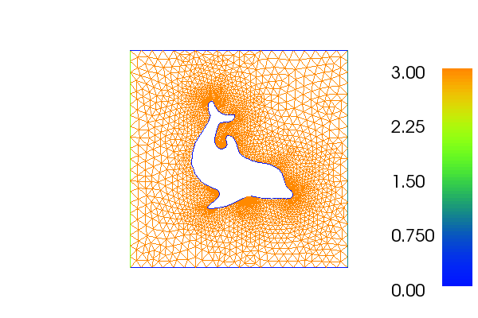

23. Marking subdomains of a mesh¶
This demo is implemented in a single Python file,
demo_subdomains.py.
This demo illustrates:
- How to mark subdomains of a mesh
- How to store subdomain markers as a mesh function to DOLFIN XML files and VTK files
23.1. Problem definition¶
In this demo, we focus on how to mark subdomains, so we do not have any equations to solve. The mesh we will work on is a unit square where the shape of a dolphin is removed from the middle of the square. This mesh and the subdomain markers produced by this demo program are the ones used for the Stokes demo programs. We will mark the boundaries so that the boundary to the right (\(x = 1\)) is inflow, the boundary to the left (\(x = 0\)) is outflow, and the top, bottom and the interior boundary around the dolphin will be noslip. We thus have
The mesh with marked boundaries looks as follows:
{kind=link}
23.2. Implementation¶
First, the dolfin module is imported:
from dolfin import *
It may be useful to get information about what is going on behind the
scenes when the program is running. In DOLFIN, we can control which
messages routed through the logging system will be printed. By
calling the function set_log_level() we specify the log level. An
optional integer argument may be given to specify the level, the
default level is 20. Only messages on a level higher than or equal to
the current log level will be printed. To get as much information as
possible we will set the log level to 1:
set_log_level(1)
Before we can mark the boundaries, we must specify the boundary conditions. We do this by defining three classes, one for each boundary condition. We start by defining the whole boundary as a noslip boundary, and then overwrite the parts of the boundary that is inflow and outflow.
# Sub domain for no-slip (mark whole boundary, inflow and outflow will overwrite)
class Noslip(SubDomain):
def inside(self, x, on_boundary):
return on_boundary
# Sub domain for inflow (right)
class Inflow(SubDomain):
def inside(self, x, on_boundary):
return x[0] > 1.0 - DOLFIN_EPS and on_boundary
# Sub domain for outflow (left)
class Outflow(SubDomain):
def inside(self, x, on_boundary):
return x[0] < DOLFIN_EPS and on_boundary
Then, we import the mesh:
# Read mesh
mesh = Mesh("dolfin-2.xml.gz")
We create a MeshFunction to
store the numbering of the subdomains. When creating a MeshFunction
an argument specifying the type of the MeshFunction must be given.
Allowed types are ‘int’, ‘size_t’, ‘double’ and ‘bool’. To illustrate
the difference of these we will use both ‘size_t’, ‘double’ and
‘bool’:
# Create mesh functions over the cell facets
sub_domains = MeshFunction("size_t", mesh, mesh.topology().dim() - 1)
sub_domains_bool = MeshFunction("bool", mesh, mesh.topology().dim() - 1)
sub_domains_double = MeshFunction("double", mesh, mesh.topology().dim() - 1)
The second and third arguments are optional. The second argument
specifies our mesh, while the third argument gives the topological
dimension of the MeshFunction,
which is the topological dimension of our mesh minus 1.
We are now ready to mark the mesh. We will create four subdomains of
the mesh; one subdomain for each boundary condition and a fourth
subdomain for the interior. First, we mark all facets in the mesh as
part of subdomain 3. Since we want to illustrate the possible types
of mesh functions, this is done in three different ways. The first
type, the MeshFunction,
takes an integer argument and all facets will be given this index.
The second type, the MeshFunction, takes a boolean as argument and all
facets will be marked by this boolean. The third type , the
MeshFunction, takes a
floating point number as argument and this number will be the index of
all the facets.
# Mark all facets as sub domain 3
sub_domains.set_all(3)
sub_domains_bool.set_all(False)
sub_domains_double.set_all(0.3)
When all facets are marked, we mark only the boundary facets. We give
the noslip boundary the index 0. To mark the facets of the noslip
boundary, we first make an instance of the class Noslip, and then
mark these facets with the correct value (either an integer, boolean
or double).
# Mark no-slip facets as sub domain 0, 0.0
noslip = Noslip()
noslip.mark(sub_domains, 0)
noslip.mark(sub_domains_double, 0.0)
The same must be done for the inflow and outflow boundaries. The inflow is marked as subdomain 1 and the outflow is marked as subdomain 2:
# Mark inflow as sub domain 1, 01
inflow = Inflow()
inflow.mark(sub_domains, 1)
inflow.mark(sub_domains_double, 0.1)
# Mark outflow as sub domain 2, 0.2, True
outflow = Outflow()
outflow.mark(sub_domains, 2)
outflow.mark(sub_domains_double, 0.2)
outflow.mark(sub_domains_bool, True)
Finally, to be able to use these subdomains together with the mesh in other programs, we save the subdomains to file, both as XML and VTK files:
# Save sub domains to file
file = File("subdomains.xml")
file << sub_domains
# FIXME: Not implemented
#file_bool = File("subdomains_bool.xml")
#file_bool << sub_domains_bool
file_double = File("subdomains_double.xml")
file_double << sub_domains_double
# Save sub domains to VTK files
file = File("subdomains.pvd")
file << sub_domains
file = File("subdomains_double.pvd")
file << sub_domains_double
23.3. Complete code¶
from dolfin import *
set_log_level(1)
# Sub domain for no-slip (mark whole boundary, inflow and outflow will overwrite)
class Noslip(SubDomain):
def inside(self, x, on_boundary):
return on_boundary
# Sub domain for inflow (right)
class Inflow(SubDomain):
def inside(self, x, on_boundary):
return x[0] > 1.0 - DOLFIN_EPS and on_boundary
# Sub domain for outflow (left)
class Outflow(SubDomain):
def inside(self, x, on_boundary):
return x[0] < DOLFIN_EPS and on_boundary
# Read mesh
mesh = Mesh("../dolfin_fine.xml.gz")
# Create mesh functions over the cell facets
sub_domains = MeshFunction("size_t", mesh, mesh.topology().dim() - 1)
sub_domains_bool = MeshFunction("bool", mesh, mesh.topology().dim() - 1)
sub_domains_double = MeshFunction("double", mesh, mesh.topology().dim() - 1)
# Mark all facets as sub domain 3
sub_domains.set_all(3)
sub_domains_bool.set_all(False)
sub_domains_double.set_all(0.3)
# Mark no-slip facets as sub domain 0, 0.0
noslip = Noslip()
noslip.mark(sub_domains, 0)
noslip.mark(sub_domains_double, 0.0)
# Mark inflow as sub domain 1, 01
inflow = Inflow()
inflow.mark(sub_domains, 1)
inflow.mark(sub_domains_double, 0.1)
# Mark outflow as sub domain 2, 0.2, True
outflow = Outflow()
outflow.mark(sub_domains, 2)
outflow.mark(sub_domains_double, 0.2)
outflow.mark(sub_domains_bool, True)
# Save sub domains to file
file = File("subdomains.xml")
file << sub_domains
# FIXME: Not implemented
#file_bool = File("subdomains_bool.xml")
#file_bool << sub_domains_bool
file_double = File("subdomains_double.xml")
file_double << sub_domains_double
# Save sub domains to VTK files
file = File("subdomains.pvd")
file << sub_domains
file = File("subdomains_double.pvd")
file << sub_domains_double